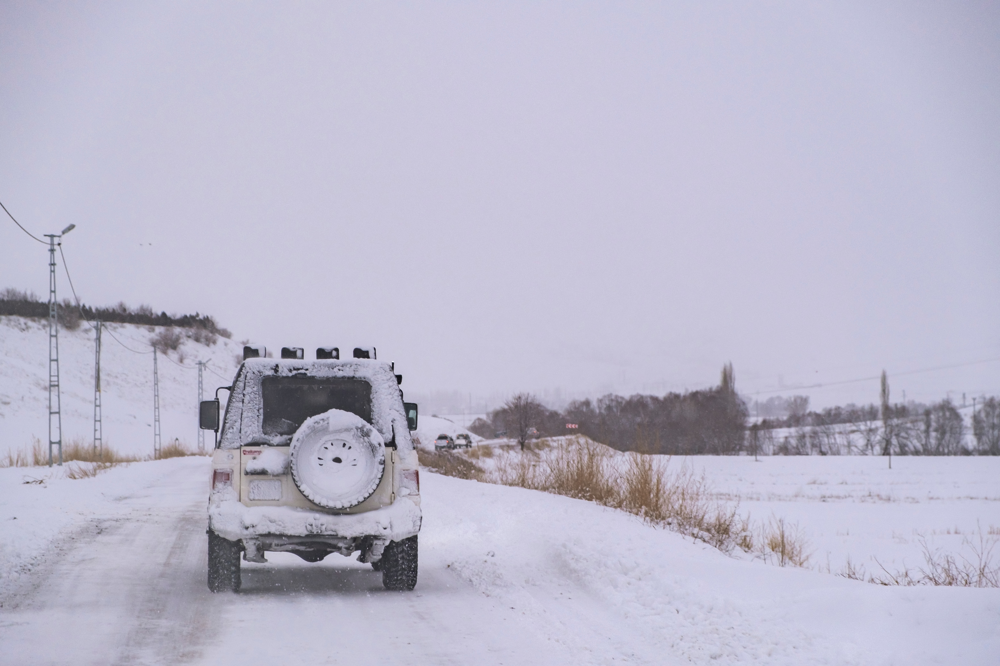
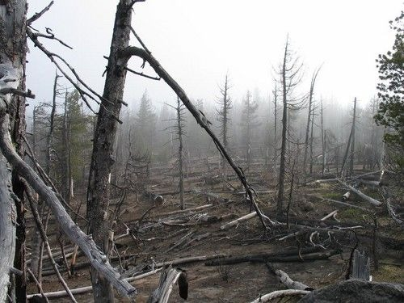

Ways To prevent Forest Fires
While we’ve all heard about the gender reveal party that sparked the deadly El Dorado fire, many of our everyday activities can also ignite them. We may not be able to stop forest fires entirely because of each ecosystem's unique fire ecology, but if you reside in an area that is prone to drought or forest fires, it's important to follow forest safety guidelines to help prevent potential disasters.
1. Don't set off pyrotechnics
We get it: fireworks are as American as baseball and apple pie, and they sure are fun to set off. And gender reveal smoke bombs are all the rage these days, but in a hot and dry environment, they just aren’t worth the risk.
2. Camp Responsibly
Make sure the conditions are safe and that there isn’t a fire ban where you are — and never leave your campfire unattended. When you’re done, douse it and wait until it’s completely cold to the touch before leaving your campsit

3. Stay on the road
Off-roading is a blast, but it can have deadly consequences if done in grasslands or areas with heavy brush. Stick to gravel and asphalt, especially during dry seasons. In fact, the best time to off-road in fire-prone areas may be when the ground is saturated with rain or covered in snow.
4. Support forest fire restoration
And finally, supporting forest fire restoration in areas that have experienced fires in the past is a key strategy for helping to prevent and/or reduce future fires. These projects, which are undertaken by conservation professionals, involve planting species that are native and fire-resistant.
